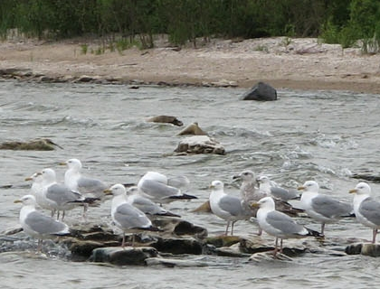

Avian Botulism in Distressed Great Lakes Environments
Template #73

Botulism outbreaks are causing extensive mortality of fish and fish-eating birds in the Great Lakes. Botulism results from ingestion of neurotoxins produced by the bacterium Clostridium botulinum, which leads to paralysis and death of intoxicated animals. Periodic outbreaks of type E botulism have occurred in the Great Lakes since at least the 1960s, but outbreaks have become more common and widespread since 1999, particularly in Lakes Michigan, Erie, and Ontario. Botulism has been responsible for over 80,000 bird deaths on the Great Lakes since 1999. Spores of the botulinum bacterium are naturally widely distributed in the environment, but toxin production occurs only when suitable environmental conditions allow spore germination and growth. Scientists suspect the conditions needed to promote toxin production are related to local soil and water conditions, and well as presence of invasive species such as zebra mussels, quagga mussels, and round gobies, but these links have not yet been proven.
The first objective of this project is to develop a method to detect botulinum toxin in the environment and to characterize the distribution and migration of waterbirds during botulism outbreaks. Researchers are developing a rapid and cost-effective method to detect botulinum toxin in the environment. This method provides a valuable tool for studying botulism outbreaks in the Great Lakes, and can also be applied to other locations. To document distribution of waterbirds, aerial surveys are being conducted on Lake Michigan across locations where previous outbreaks have occurred. High-resolution digital photography is being used to georeference and automate counting and mapping of waterbird distribution. Common Loons will also receive special geolocator tags so that scientists can document bird foraging and migration patterns on the Great Lakes.
The second objective of this project is to characterize the epidemiology of current and past outbreaks in birds and determine toxin exposure pathways to birds through the food web. Data on the timing and location of outbreaks is being integrated with information on invasive species presence (zebra and quagga mussels), weather, fish populations, and other physical site characteristics to reveal patterns in botulism outbreaks. To determine exposure pathways to birds through the food web, sediment is being sampled from multiple locations and time periods and screened for the presence of the gene that codes for botulinum toxin. Scientists are focusing particularly on locations where an algae, Cladophora, accumulates and decomposes, possibly promoting toxin production. Invasive fish (round gobies) and their prey are also being collected and screened for the presence of botulinum toxin. Analysis of these samples allows scientists to determine the environmental conditions, food web components, and physical characteristics of sites associated with the presence and production of botulinum toxin.
Botulinum toxin is the most toxic natural substance on earth. Botulism has resulted in the deaths of tens of thousands of fish and birds in the Great Lakes since 1999, including federally endangered Piping Plovers and imperiled lake sturgeon. The proliferation of botulism in the Great Lakes represents a serious challenge to Great Lakes restoration efforts. Through this GLRI-funded project, the USGS is bringing together scientists with diverse areas of expertise to address botulism outbreaks in the Great Lakes. This team of experts is taking a comprehensive approach to understanding what factors need to link together to trigger a botulism outbreak, and how future outbreaks can be predicted and prevented in the Great Lakes. Scientists are developing methods to detect the presence of botulinum toxin in the environment and determining how the botulinum toxin reaches bird populations through Great Lakes food webs.
GLRI funding is now allowing USGS scientists to make breakthroughs in the prediction and prevention of botulism outbreaks. Scientists have developed and are refining a rapid and cost-effective methodology to detect botulinum toxin. This technology is an important tool that will make assessment of the presence of botulinum toxin much more efficient in the Great Lakes. This technology will also have valuable applications to other systems. This GLRI project is providing critical information toward understanding the factors that promote the proliferation of botulinum toxin in the Great Lakes. The information that this project is generating allows managers to better predict future outbreaks and, ultimately, will allow managers to develop strategies to prevent future outbreaks from occurring, providing great benefits to restoration efforts for the Great Lakes.
Sediment samples were collected during 2010-2012 near Sleeping Bear Dunes National Lakeshore, on Lake Michigan. A total of 435 samples were analyzed for the presence of the botulinum toxin gene. Results from this analysis are used to understand the ways through which birds come into contact with botulinum toxin. A new method to detect botulinum toxin has been developed that performs as well as the “gold-standard” traditional method. The new method is faster and cheaper than the traditional method, and is a major step forward in the study of botulism. Scientists have learned that avian botulism is the main cause of bird mortality in Lake Michigan. Over 950 sick or dead birds have been collected through this project. Seventy-six birds have been tested for botulinum toxin, of which 42 were positive (55% positive). The distribution and migration of over 175 Common Loons have been tracked to reveal where loons are likely to be exposed to prey fish carrying botulinum toxin.
Scientists obtained the first ever dive profiles for loons and have learned that loons dive as deep as 150 feet to feed in Lake Michigan.
You can track movements of loons by visiting the USGS loon migration website: (http://www.umesc.usgs.gov/terrestrial/migratory_birds/loons/migrations.html)
A citizen science program (Lake Michigan Volunteer AMBLE: Avian Monitoring for Botulism Lakeshore Events) was established to collect data on bird carcasses that wash ashore near Sleeping Bear Dunes and the Upper Peninsula of Michigan, and across the lake in Door County, Wisconsin. This team effort has considerably increased our knowledge of the timing, numbers, and species affected by avian botulism.
Stephen Riley, sriley@usgs.gov 734-214-7279